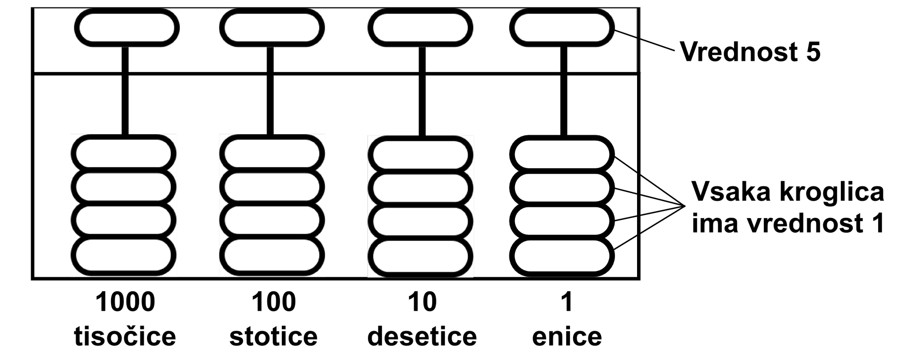

Licenca
To delo je na voljo pod pogoji slovenske licence Creative Commons 2.5:
priznanje avtorstva - nekomercialno - deljenje pod enakimi pogoji.
Celotna licenca je na voljo na spletu na naslovu http://creativecommons.org/licenses/by-nc-sa/2.5/si/. V skladu s to licenco je dovoljeno vsakemu uporabniku delo razmnoževati, distribuirati, javno priobčevati, dajati v najem in tudi predelovati, vendar samo v nekomercialne namene in ob pogoju, da navede avtorja oziroma avtorje in izdajatelja tega dela. Če uporabnik delo predela, kar pomeni, da ga spremeni, preoblikuje, prevede ali uporabi to delo v svojem delu, lahko predelavo dela ponudi na voljo le pod pogoji, ki so enaki pogojem iz te licence oziroma pod enako licenco.

Predzgodovina
20.000 let pred našim štetjem
Ljudje smo si pri štetju vedno pomagali z raznimi pripomočki. Še danes si nekateri pri računanju pomagamo s prsti. Včasih so si pomagali tudi z lesenimi palicami, v katere so naredili zareze. Takšna palica se je imenovala rovaš. V Sloveniji se je uporabljala vse do 20. stoletja kot pripomoček za štetje brent obranega grozdja. Uporabljali pa so jo tudi za vodenje evidence o izposoji vina ali žita in celo za vodenje davkov.
2.500 let pred našim štetjem
Pojavil se je zanimiv pripomoček za seštevanje in odštevanje, ki je precej poenostavil trgovanje. Naprava se je imenovala kar preštevalni okvir oziroma abakus. Imela je lesen okvir, kamor so bile vpete kroglice. Kroglice so bile razdeljene navpično v dva dela. Spodnje kroglice so imele vrednost 1, zgornja kroglica je predstavljala vrednost 5. Vodoravne palčke, vsaka s petimi kroglicami, so predstavljale enice, desetice, stotice, tisočice in tako naprej, kot je prikazano na spodnji sliki.
Japonski šolarji še vedno računajo s pomočjo abakusa in z njim tudi tekmujejo v hitrosti računanja. Tisti najboljši niti ne potrebujejo več fizične naprave, dovolj je, da si jo le zamislijo.
 Shema abakusa
150 let pred našim štetjem
Naslednjih več kot 1500 let so se ljudje ukvarjali predvsem z računanjem časa in osvajanjem novih ozemelj. Na poti jih je seveda zanimalo, kje se nahajajo, v katero smer gredo, kdaj bo vzšlo sonce in kdaj zašlo. Tako so nastale prve mehanske analogne naprave. Ena od takšnih naprav je bila sestavljena iz več krogov, ki so bili v središču spojeni z vijakom. Na vijak je bilo pritrjeno tudi ravnilo, ki je pomagalo pri odčitavanju podatkov. Vsak krog je imel svojo funkcijo. Na enem od krogov so bile recimo označene najsvetlejše zvezde neba, na drugem pa je bilo označeno, kako se pozicija sonca pretvori v datum. Z vrtenjem ravnila so ljudje lahko ugotovili, koliko dni potujejo in kje se nahajajo.
Vaja
Na spodnjem abakusu imaš prikazanih pet primerov štetja. Preizkusi svoje sposobnosti še sam in reši nekaj nalog.